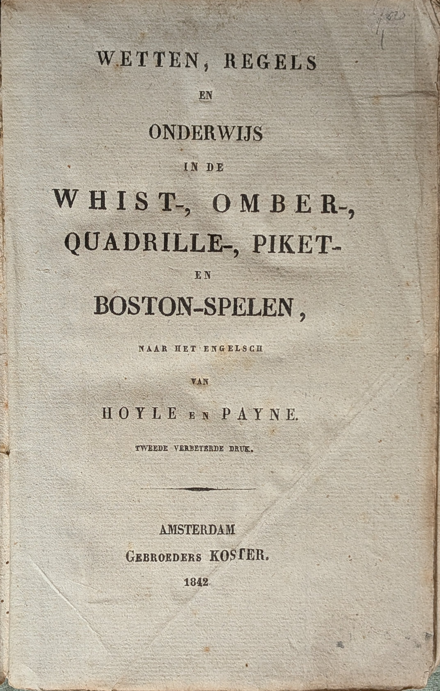

A Descriptive Bibliography of Edmond Hoyle
Copyright © 2014-26 by David Levy
(page updated 2026-03-24)User Guide
Whist.Nl.2.2
Wetten, Regels, en Onderwijs in det Whist, Gebroeders Koster, second edition, second issue, 1842.
 |
Title: | WETTEN, REGELS | EN | ONDERWIJS | IN DE | WHIST-, OMBER-, | QUADRILLE-, PIKET- | EN | BOSTON-SPELEN, | NAAR HET ENGELSCH | VAN | HOYLE EN PAYNE | TWEEDE VERBETERDE DRUK. | [swelled rule] | AMSTERDAM | Gebroeders KOSTER. | 1842. |
| Collation: | 8o: ∗6(±∗1) A–P8 Q4(−Q4 missing, blank?) [$1–5 (−∗5) signed]; 129 leaves, pp. [i–iii] iv [v] vi–xii, [1] 2–246 |
| Contents: | Signature (Page) Reference | Contents | Signature (Page) Reference | Running Titles |
| ∗1r (i) | title | |||
| ∗1v (ii) | blank | |||
| ∗2r–∗6v (iii–xii) | see Whist.Nl.2.1 (1810) | ∗3v–∗6v (vi–xii) | see Whist.Nl.2.1 (1810) | |
| A1r–Q3v (1–246) | see Whist.Nl.2.1 (1810) |
| Plates: | opposite M6v(188) letterpress: folded quarter sheet printed on both sides: ‘Tarif bij het Quadrilleſpelen met honneurs. | [...]’ |
| Publisher: | Gebroeders Koster |
| References: | Rather T |
| Copies Seen: | Levy [2211] |
| Other Copies: | AMu [UBM: 1087 E 4] (Google); KBR [II 98.052 A]; NvLN [GV1241.W48 1842] |